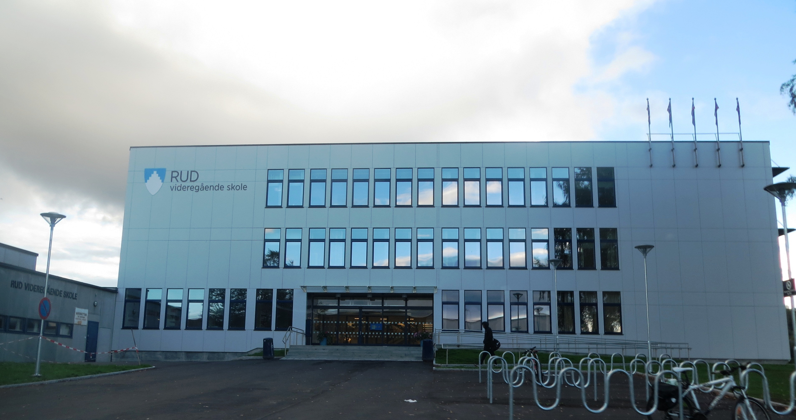

Foto: Bjerke videregående skole
Danny Pham Student
| Danny Pham | ID: dapha0157 |
"Skolen min har de beste treningsfasilitetene"
Bjerke VGS hadde de beste treningsfasilitetene
Skolen hadde treningsfasiliteter over hele Oslo som vi kunne trene på. Skolen min hadde fasiliteter for hver idrett, som for eksempel:
basketball, fotball, håndball, innebandy og mange andre idretter.
På selve skolen vår hadde vi 3 ulike treningshaller å velge mellom med mange dyktige trenere.

Foto: Per N. Schwabe
Rud Videregående Skole
| Leo Rånes Nygård | ID: lenyg7573 |
Rud er en skole med rundt 1000 elever og en del studier.
Elektrofag med studiespesialiserende
Det er en linje for deg som ønsker litt utenom det vanlige.
Du blir ingen elektriker, men lærer mye rundt det.

Foto: LANDSKAPERIET AS
Tuong Vy Nguyen | Tungu2400
Blindern videregående skole
Blindern vgs er en skole for studiespesialiserende og IB elever.
Elevene fra disse to linjene har klasserom på hver sin side av bygget, mens kantinen er fellesarealet.
Skolens bygg har også en avdeling for Etterstad vgs, Kuben vgs og tilrettelagt opplæring.

Foto: Aleksander Myklebust
Lillehammer Videregående Skole avdeling Sør
| Christine Ngoc Tran | ID: chtra2129 |
Min videregående skole hadde den beste ostebriksen.
Den ble ofte utsolgt, og den er større enn hånda mi.
Anbefaler den virkelig. Jeg savner den.

Foto: Trond Joelson
Mailand Videregående Skole
| Sarania Selvasri | ID: Sasel4433 |
Mailand videregående skole er en skole som ligger sentralt plasser i Lørenskog.
Siden vi har 3 matbutikker og et kjøpesenter i nærheten av skolen drar elevene dit istedenfor siden det er dyrere å kjøpe mat fra kantinen.
Det beste med Mailand videregående skole var at jeg bodde 10 minutter unna. Så jeg trengte ikke å våkne tidlig. Savner den tiden!
Tilbake til forsiden